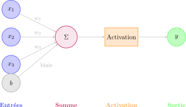
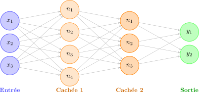
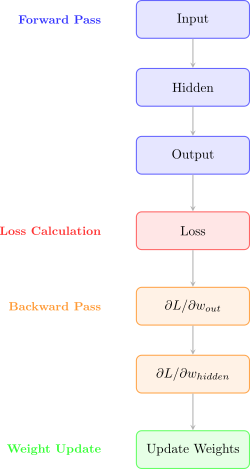

import numpy as np
def neuron(inputs, weights, bias, activation_fn):
"""Un neurone artificiel simple"""
# Somme pondérée
z = np.dot(inputs, weights) + bias
# Activation
output = activation_fn(z)
return output
# Exemple
inputs = np.array([1.0, 2.0, 3.0])
weights = np.array([0.5, -0.3, 0.8])
bias = 0.1
def sigmoid(x):
return 1 / (1 + np.exp(-x))
output = neuron(inputs, weights, bias, sigmoid)
print(f"Sortie du neurone: {output:.4f}")Séance 11: Réseaux de Neurones Artificiels
Introduction aux Réseaux de Neurones
Les réseaux de neurones artificiels (RNA ou ANN en anglais) sont des modèles d’apprentissage inspirés du fonctionnement du cerveau humain. Ils sont la base du Deep Learning.
TipPourquoi les réseaux de neurones ?
- Capables d’apprendre des représentations complexes
- Performance exceptionnelle sur images, texte, audio
- Peuvent approximer n’importe quelle fonction (théorème d’approximation universelle)
- Automatisent l’extraction de features
Architecture d’un Réseau de Neurones
Le Neurone Artificiel (Perceptron)
Un neurone artificiel est l’unité de base d’un réseau de neurones.

Fonctionnement:
- Somme pondérée: \(z = w_1x_1 + w_2x_2 + ... + w_nx_n + b\)
- Activation: \(y = f(z)\)
Où:
- \(x_i\) = entrées (features)
- \(w_i\) = poids (weights)
- \(b\) = biais (bias)
- \(f\) = fonction d’activation
- \(y\) = sortie
Architecture Multi-couches
Un réseau de neurones est composé de plusieurs couches de neurones:
- Couche d’entrée (Input layer): Reçoit les données
- Couches cachées (Hidden layers): Traite l’information
- Couche de sortie (Output layer): Produit la prédiction

Terminologie:
- Dense/Fully Connected: Chaque neurone connecté à tous les neurones de la couche suivante
- Profondeur: Nombre de couches cachées
- Largeur: Nombre de neurones par couche
Fonctions d’Activation
Les fonctions d’activation introduisent de la non-linéarité dans le réseau.
Sigmoid (Sigmoïde)
\[\sigma(x) = \frac{1}{1 + e^{-x}}\]
Caractéristiques:
- Sortie dans [0, 1]
- Interprétable comme probabilité
- Problème: Vanishing gradient
import numpy as np
import matplotlib.pyplot as plt
def sigmoid(x):
return 1 / (1 + np.exp(-x))
x = np.linspace(-10, 10, 1000)
y = sigmoid(x)
plt.figure(figsize=(10, 6))
plt.plot(x, y, linewidth=2)
plt.title('Fonction Sigmoid')
plt.xlabel('x')
plt.ylabel('σ(x)')
plt.grid(True, alpha=0.3)
plt.axhline(y=0.5, color='r', linestyle='--', alpha=0.5)
plt.axvline(x=0, color='r', linestyle='--', alpha=0.5)
plt.show()Tanh (Tangente Hyperbolique)
\[\tanh(x) = \frac{e^x - e^{-x}}{e^x + e^{-x}}\]
Caractéristiques:
- Sortie dans [-1, 1]
- Centrée autour de 0
- Meilleure que sigmoid pour couches cachées
ReLU (Rectified Linear Unit)
\[\text{ReLU}(x) = \max(0, x)\]
Caractéristiques:
- La plus utilisée pour couches cachées
- Simple et efficace
- Résout le problème de vanishing gradient
- Peut souffrir de “dying ReLU”
def relu(x):
return np.maximum(0, x)
def leaky_relu(x, alpha=0.01):
return np.where(x > 0, x, alpha * x)
x = np.linspace(-10, 10, 1000)
plt.figure(figsize=(15, 5))
# ReLU
plt.subplot(1, 3, 1)
plt.plot(x, relu(x), linewidth=2)
plt.title('ReLU')
plt.xlabel('x')
plt.ylabel('ReLU(x)')
plt.grid(True, alpha=0.3)
# Leaky ReLU
plt.subplot(1, 3, 2)
plt.plot(x, leaky_relu(x), linewidth=2)
plt.title('Leaky ReLU')
plt.xlabel('x')
plt.ylabel('Leaky ReLU(x)')
plt.grid(True, alpha=0.3)
# Comparaison
plt.subplot(1, 3, 3)
plt.plot(x, sigmoid(x), label='Sigmoid', linewidth=2)
plt.plot(x, np.tanh(x), label='Tanh', linewidth=2)
plt.plot(x, relu(x), label='ReLU', linewidth=2)
plt.title('Comparaison des Activations')
plt.xlabel('x')
plt.ylabel('f(x)')
plt.legend()
plt.grid(True, alpha=0.3)
plt.tight_layout()
plt.show()Softmax (pour classification multi-classes)
\[\text{softmax}(x_i) = \frac{e^{x_i}}{\sum_{j} e^{x_j}}\]
Caractéristiques:
- Utilisée en couche de sortie pour classification
- Produit une distribution de probabilité
- Somme des sorties = 1
def softmax(x):
exp_x = np.exp(x - np.max(x)) # Stabilité numérique
return exp_x / exp_x.sum()
# Exemple
scores = np.array([2.0, 1.0, 0.5])
probas = softmax(scores)
print(f"Scores: {scores}")
print(f"Probabilités: {probas}")
print(f"Somme: {probas.sum()}")Tableau Récapitulatif
| Fonction | Formule | Plage | Usage |
|---|---|---|---|
| Sigmoid | \(\frac{1}{1+e^{-x}}\) | [0, 1] | Classification binaire (sortie) |
| Tanh | \(\frac{e^x-e^{-x}}{e^x+e^{-x}}\) | [-1, 1] | Couches cachées |
| ReLU | \(\max(0, x)\) | [0, ∞) | Couches cachées (par défaut) |
| Leaky ReLU | \(\max(0.01x, x)\) | (-∞, ∞) | Alternative à ReLU |
| Softmax | \(\frac{e^{x_i}}{\sum e^{x_j}}\) | [0, 1] | Classification multi-classes |
Fonction de Coût (Loss Function)
La fonction de coût mesure l’erreur entre prédictions et vraies valeurs.
Pour Régression: MSE (Mean Squared Error)
\[\text{MSE} = \frac{1}{n}\sum_{i=1}^{n}(y_i - \hat{y}_i)^2\]
Pour Classification Binaire: Binary Cross-Entropy
\[\text{BCE} = -\frac{1}{n}\sum_{i=1}^{n}[y_i\log(\hat{y}_i) + (1-y_i)\log(1-\hat{y}_i)]\]
Pour Classification Multi-classes: Categorical Cross-Entropy
\[\text{CCE} = -\frac{1}{n}\sum_{i=1}^{n}\sum_{c=1}^{C}y_{i,c}\log(\hat{y}_{i,c})\]
def binary_cross_entropy(y_true, y_pred):
"""Binary Cross-Entropy Loss"""
epsilon = 1e-15 # Pour éviter log(0)
y_pred = np.clip(y_pred, epsilon, 1 - epsilon)
return -np.mean(y_true * np.log(y_pred) + (1 - y_true) * np.log(1 - y_pred))
def categorical_cross_entropy(y_true, y_pred):
"""Categorical Cross-Entropy Loss"""
epsilon = 1e-15
y_pred = np.clip(y_pred, epsilon, 1 - epsilon)
return -np.mean(np.sum(y_true * np.log(y_pred), axis=1))
# Exemple
y_true = np.array([1, 0, 1, 1])
y_pred = np.array([0.9, 0.1, 0.8, 0.7])
loss = binary_cross_entropy(y_true, y_pred)
print(f"Binary Cross-Entropy Loss: {loss:.4f}")Descente de Gradient
L’optimisation consiste à ajuster les poids pour minimiser la fonction de coût.
Gradient Descent (Descente de Gradient)
Principe: Mettre à jour les poids dans la direction opposée au gradient
\[w_{new} = w_{old} - \alpha \frac{\partial L}{\partial w}\]
Où:
- \(\alpha\) = learning rate (taux d’apprentissage)
- \(\frac{\partial L}{\partial w}\) = gradient de la loss par rapport aux poids
def gradient_descent_step(weights, gradients, learning_rate):
"""Une étape de descente de gradient"""
return weights - learning_rate * gradients
# Exemple
weights = np.array([0.5, -0.3, 0.8])
gradients = np.array([0.1, -0.05, 0.15])
learning_rate = 0.01
new_weights = gradient_descent_step(weights, gradients, learning_rate)
print(f"Anciens poids: {weights}")
print(f"Nouveaux poids: {new_weights}")Variants de Gradient Descent
1. Batch Gradient Descent
- Utilise tout le dataset pour calculer le gradient
- Lent mais stable
2. Stochastic Gradient Descent (SGD)
- Utilise un seul exemple à la fois
- Rapide mais instable
3. Mini-Batch Gradient Descent
- Utilise un petit batch (ex: 32, 64, 128 exemples)
- Compromis idéal: rapide et stable
- Le plus utilisé en pratique
Optimiseurs Avancés
SGD avec Momentum
- Accumule la vitesse des mises à jour
- Aide à traverser les plateaux
Adam (Adaptive Moment Estimation)
- Le plus populaire
- Adapte le learning rate pour chaque paramètre
- Combine momentum et RMSprop
# Comparaison des optimiseurs (conceptuel)
optimizers = {
'SGD': {'lr': 0.01},
'SGD + Momentum': {'lr': 0.01, 'momentum': 0.9},
'Adam': {'lr': 0.001, 'beta1': 0.9, 'beta2': 0.999}
}
# En pratique avec TensorFlow/Keras
from tensorflow.keras.optimizers import SGD, Adam
# SGD simple
sgd = SGD(learning_rate=0.01)
# SGD avec momentum
sgd_momentum = SGD(learning_rate=0.01, momentum=0.9)
# Adam
adam = Adam(learning_rate=0.001)Rétropropagation (Backpropagation)
La rétropropagation est l’algorithme qui calcule les gradients dans un réseau multicouches.
Principe
- Forward pass: Propager les données de l’entrée vers la sortie
- Calculer la loss: Mesurer l’erreur
- Backward pass: Propager l’erreur de la sortie vers l’entrée
- Mettre à jour les poids: Utiliser les gradients calculés

Règle de la Chaîne
La rétropropagation utilise la règle de la chaîne pour calculer les gradients:
\[\frac{\partial L}{\partial w_1} = \frac{\partial L}{\partial y} \times \frac{\partial y}{\partial z} \times \frac{\partial z}{\partial w_1}\]
Exemple simplifié:
# Réseau simple: x -> w -> z -> sigmoid -> y -> loss
# Forward pass
x = 2.0
w = 0.5
z = x * w # z = 1.0
y = 1 / (1 + np.exp(-z)) # sigmoid: y = 0.731
y_true = 1.0
loss = -(y_true * np.log(y) + (1 - y_true) * np.log(1 - y))
print(f"Forward pass:")
print(f" x={x}, w={w}")
print(f" z={z:.3f}, y={y:.3f}")
print(f" loss={loss:.3f}")
# Backward pass (calcul des gradients)
# dL/dy
dL_dy = -(y_true / y - (1 - y_true) / (1 - y))
# dy/dz (dérivée de sigmoid)
dy_dz = y * (1 - y)
# dz/dw
dz_dw = x
# Règle de la chaîne: dL/dw = dL/dy * dy/dz * dz/dw
dL_dw = dL_dy * dy_dz * dz_dw
print(f"\nBackward pass:")
print(f" dL/dw={dL_dw:.3f}")
# Update
learning_rate = 0.1
w_new = w - learning_rate * dL_dw
print(f"\nUpdate:")
print(f" w_old={w:.3f}")
print(f" w_new={w_new:.3f}")Paramètres vs Hyperparamètres
Paramètres (appris par le réseau)
- Poids (weights)
- Biais (biases)
Ces valeurs sont optimisées automatiquement pendant l’entraînement.
Hyperparamètres (choisis par le data scientist)
Architecture:
- Nombre de couches
- Nombre de neurones par couche
- Fonction d’activation
Entraînement:
- Learning rate
- Batch size
- Nombre d’epochs
- Optimiseur
Régularisation: - Dropout rate - L1/L2 regularization - Batch normalization
# Exemple de configuration
hyperparameters = {
# Architecture
'hidden_layers': [128, 64, 32],
'activation': 'relu',
'output_activation': 'softmax',
# Entraînement
'learning_rate': 0.001,
'batch_size': 32,
'epochs': 100,
'optimizer': 'adam',
# Régularisation
'dropout_rate': 0.3,
'l2_regularization': 0.01
}Régularisation
La régularisation aide à prévenir l’overfitting.
Dropout
Principe: Désactiver aléatoirement des neurones pendant l’entraînement
def dropout(x, rate=0.5, training=True):
"""
Dropout layer
Args:
x: input
rate: proportion de neurones à désactiver
training: mode entraînement ou inférence
"""
if not training:
return x
# Créer un masque binaire
mask = np.random.binomial(1, 1-rate, size=x.shape)
# Appliquer le masque et rescaler
return x * mask / (1 - rate)
# Exemple
x = np.array([1.0, 2.0, 3.0, 4.0, 5.0])
x_dropout = dropout(x, rate=0.5, training=True)
print(f"Original: {x}")
print(f"Avec dropout (50%): {x_dropout}")Avantages:
- Force le réseau à apprendre des représentations robustes
- Effet d’ensemble (comme Random Forest)
- Très efficace contre overfitting
Batch Normalization
Principe: Normaliser les activations entre les couches
\[\text{BN}(x) = \gamma \frac{x - \mu}{\sqrt{\sigma^2 + \epsilon}} + \beta\]
Avantages:
- Accélère l’entraînement
- Permet des learning rates plus élevés
- Effet régularisant
- Réduit la dépendance à l’initialisation
def batch_norm(x, gamma=1.0, beta=0.0, epsilon=1e-5):
"""
Batch Normalization
Args:
x: input (batch, features)
gamma: scale parameter
beta: shift parameter
"""
# Calculer moyenne et variance du batch
mean = np.mean(x, axis=0)
var = np.var(x, axis=0)
# Normaliser
x_norm = (x - mean) / np.sqrt(var + epsilon)
# Scale and shift
return gamma * x_norm + beta
# Exemple
batch = np.random.randn(32, 10) # 32 exemples, 10 features
batch_normalized = batch_norm(batch)
print(f"Avant BN - Mean: {batch.mean(axis=0)[:3]}")
print(f"Avant BN - Std: {batch.std(axis=0)[:3]}")
print(f"Après BN - Mean: {batch_normalized.mean(axis=0)[:3]}")
print(f"Après BN - Std: {batch_normalized.std(axis=0)[:3]}")L1/L2 Regularization
L2 (Ridge): \[L_{total} = L_{original} + \lambda \sum w^2\]
L1 (Lasso): \[L_{total} = L_{original} + \lambda \sum |w|\]
Effet:
- Pénalise les poids élevés
- Force le modèle à rester simple
- L1 peut mettre des poids à 0 (sélection de features)
Exercices
NoteCorrection Exercice 1
import numpy as np
# Données
x = np.array([2, 3])
W1 = np.array([[0.5, -0.3], [0.2, 0.8]])
b1 = np.array([0.1, -0.1])
W2 = np.array([[0.6], [-0.4]])
b2 = np.array([0.2])
print("=" * 60)
print("FORWARD PASS - CALCUL ÉTAPE PAR ÉTAPE")
print("=" * 60)
# Couche 1
print("\n1. COUCHE 1:")
print(f" Input: x = {x}")
print(f" Poids: W1 =\n{W1}")
print(f" Biais: b1 = {b1}")
z1 = np.dot(x, W1) + b1
print(f"\n z1 = x · W1 + b1")
print(f" z1 = {x} · W1 + {b1}")
print(f" z1 = {z1}")
a1 = np.maximum(0, z1) # ReLU
print(f"\n a1 = ReLU(z1) = max(0, z1)")
print(f" a1 = {a1}")
# Couche 2
print("\n2. COUCHE 2:")
print(f" Input: a1 = {a1}")
print(f" Poids: W2 =\n{W2}")
print(f" Biais: b2 = {b2}")
z2 = np.dot(a1, W2) + b2
print(f"\n z2 = a1 · W2 + b2")
print(f" z2 = {a1} · W2 + {b2}")
print(f" z2 = {z2}")
a2 = 1 / (1 + np.exp(-z2)) # Sigmoid
print(f"\n a2 = sigmoid(z2) = 1 / (1 + e^(-z2))")
print(f" a2 = {a2}")
print("\n" + "=" * 60)
print(f"SORTIE FINALE: {a2[0]:.4f}")
print("=" * 60)
# Détail des calculs
print("\nDÉTAIL DES CALCULS:")
print("\nCouche 1 - Neurone 1:")
print(f" z1[0] = 2×0.5 + 3×(-0.3) + 0.1")
print(f" = 1.0 - 0.9 + 0.1 = {z1[0]}")
print(f" a1[0] = ReLU({z1[0]}) = {a1[0]}")
print("\nCouche 1 - Neurone 2:")
print(f" z1[1] = 2×0.2 + 3×0.8 + (-0.1)")
print(f" = 0.4 + 2.4 - 0.1 = {z1[1]}")
print(f" a1[1] = ReLU({z1[1]}) = {a1[1]}")
print("\nCouche 2 - Sortie:")
print(f" z2 = {a1[0]}×0.6 + {a1[1]}×(-0.4) + 0.2")
print(f" = {a1[0]*0.6:.2f} + {a1[1]*(-0.4):.2f} + 0.2 = {z2[0]:.2f}")
print(f" a2 = sigmoid({z2[0]:.2f}) = {a2[0]:.4f}")Réponse: La sortie du réseau est 0.4378 (environ 43.78%)
NoteCorrection Exercice 2
a) Classification binaire - Couche de sortie:
- Fonction: Sigmoid
- Justification:
- Sortie dans [0, 1] → interprétable comme probabilité
- 1 neurone suffit
- Loss: Binary Cross-Entropy
- Exemple: P(cancer) = 0.85 → 85% de probabilité
# Architecture pour classification binaire
model = Sequential([
Dense(64, activation='relu'), # Couche cachée
Dense(32, activation='relu'), # Couche cachée
Dense(1, activation='sigmoid') # Sortie: 1 neurone, sigmoid
])
model.compile(
optimizer='adam',
loss='binary_crossentropy', # Loss adaptée
metrics=['accuracy']
)b) Régression - Couche de sortie:
Fonction: Aucune (linéaire) ou ReLU si valeurs positives
Justification:
- Besoin de valeurs continues sans contrainte
- Pas d’activation = sortie linéaire
- ReLU si prix toujours positifs
- Loss: MSE ou MAE
# Régression simple
model = Sequential([
Dense(64, activation='relu'),
Dense(32, activation='relu'),
Dense(1) # Pas d'activation = linéaire
])
# Ou si valeurs toujours positives
model_positive = Sequential([
Dense(64, activation='relu'),
Dense(32, activation='relu'),
Dense(1, activation='relu') # ReLU pour valeurs ≥ 0
])
model.compile(
optimizer='adam',
loss='mse', # Mean Squared Error
metrics=['mae']
)c) Classification 10 classes - Couche de sortie:
Fonction: Softmax
Justification:
- 10 neurones (un par classe)
- Softmax produit distribution de probabilité
- Somme des probabilités = 1
- Loss: Categorical Cross-Entropy
# Classification multi-classes (MNIST)
model = Sequential([
Dense(128, activation='relu'),
Dense(64, activation='relu'),
Dense(10, activation='softmax') # 10 classes, softmax
])
model.compile(
optimizer='adam',
loss='categorical_crossentropy', # ou sparse_categorical_crossentropy
metrics=['accuracy']
)
# Exemple de sortie
# [0.05, 0.02, 0.60, 0.10, 0.01, 0.08, 0.03, 0.04, 0.05, 0.02]
# 0 1 2 3 4 5 6 7 8 9
# → Prédiction: classe 2 (60% de probabilité)d) Couches cachées:
Fonction: ReLU (ou variants: Leaky ReLU, ELU)
Justification:
- Standard moderne pour couches cachées
- Calcul rapide
- Évite vanishing gradient
- Sparsité (certains neurones à 0)
- Performance excellente en pratique
# Architecture standard
model = Sequential([
Dense(128, activation='relu'), # ✓ ReLU par défaut
Dense(64, activation='relu'), # ✓ ReLU par défaut
Dense(32, activation='relu'), # ✓ ReLU par défaut
Dense(10, activation='softmax')
])
# Alternative: Leaky ReLU si problème de dying ReLU
from tensorflow.keras.layers import LeakyReLU
model = Sequential([
Dense(128),
LeakyReLU(alpha=0.01),
Dense(64),
LeakyReLU(alpha=0.01),
Dense(10, activation='softmax')
])e) Probabilités multiples indépendantes: - Fonction: Sigmoid (sur chaque neurone) - Justification: - Problème multi-label (plusieurs labels possibles) - Chaque sortie indépendante dans [0, 1] - Exemple: Photo peut contenir [chien, chat, personne] - Loss: Binary Cross-Entropy (appliquée à chaque sortie)
# Multi-label classification
# Exemple: tags d'une image
model = Sequential([
Dense(128, activation='relu'),
Dense(64, activation='relu'),
Dense(5, activation='sigmoid') # 5 labels indépendants
])
model.compile(
optimizer='adam',
loss='binary_crossentropy', # Pour chaque sortie
metrics=['accuracy']
)
# Exemple de sortie
# [0.85, 0.12, 0.95, 0.05, 0.78]
# Interprétation avec seuil 0.5:
# Label 0: OUI (0.85)
# Label 1: NON (0.12)
# Label 2: OUI (0.95)
# Label 3: NON (0.05)
# Label 4: OUI (0.78)Tableau récapitulatif:
| Tâche | Couche Sortie | Activation | Loss |
|---|---|---|---|
| Classification binaire | 1 neurone | Sigmoid | Binary Cross-Entropy |
| Régression | 1 neurone | Linéaire/ReLU | MSE/MAE |
| Multi-classes (exclusive) | N neurones | Softmax | Categorical Cross-Entropy |
| Multi-label (non-exclusive) | N neurones | Sigmoid | Binary Cross-Entropy |
| Couches cachées | N neurones | ReLU | N/A |
Résumé de la Séance
Préparation pour le TP
Pour le prochain TP, vous devrez:
- Installer TensorFlow/Keras
- Comprendre la structure d’un réseau de neurones
- Savoir choisir les fonctions d’activation appropriées
- Connaître les différentes fonctions de coût
Lectures Complémentaires
- Goodfellow et al. (2016) - Deep Learning, Chapitre 6
- 3Blue1Brown - Neural Networks
- CS231n - Neural Networks Part 1
- Chollet, F. (2021) - Deep Learning with Python, Chapitre 2-3